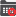

Once you have added a node to the Default context of the Context View window, then you can assign a graphic form to it, so that when this context is displayed using the TemplateGOContextNav control, it can be opened by double clicking this node.
Tip: The following icon indicates that a node has an associated graphic form:
Note: You can also remove this associated graphic form via the right click

option.In the General Settings tab of the displayed dialog:
Open As: specify how the graphic form opens, as follows:
Note: If you intend on using the TemplateGOContextNav control to display this context, then ensure that the Use default checkbox is checked (which disables the Open As list box), since this ensures that this graphic form is displayed in the right TemplateGO pane of this control.
Position: specify where, on the screen, the graphic form opens, as follows:
Note1: The Advanced View provides an Aliases tab, which lists any configured aliases of the specified graphic form, so that these values can be set either by specific data elements or by static values.
Note2: If the specified graphic form does not exist (for instance if it was typed in incorrectly then it displays the text 'graphic form not found' when opened.
IMPORTANT: The default action for values entered into the Aliases tab of the Advanced View has been changed to always specify the text that is either manually entered or browsed in, unless the Use Tag Value checkbox is checked, at which time it will try to resolve the required data element value from the entered (typically browsed in) text.
Therefore when passing substitutions or aliases, in curly {} brackets, ensure that the Use Tag Value checkbox is NOT checked, which is its default setting.